31
Films (1956–1969)
Guide complet — édition fan inconditionnel
Tupelo, 1935 — Graceland, 1977. Chronologie détaillée, chiffres précis, secrets et anecdotes du King of Rock 'n' Roll.
Sept étapes d'une vie qui a redéfini la musique populaire, de la maison de deux pièces à Tupelo jusqu'à Graceland.
Elvis Aaron Presley naît à 4h35 du matin dans une petite maison de deux pièces à East Tupelo. Son frère jumeau identique, Jesse Garon, est mort-né 35 minutes plus tôt. Ses parents, Vernon et Gladys, sont extrêmement pauvres — le médecin est payé grâce à l'aide sociale (15 dollars).
Elvis a toujours ressenti l'absence de son jumeau, et fera plus tard changer légalement « Aron » en « Aaron ». Il disait souvent se sentir « seul au milieu de la foule ».
À 10 ans, Elvis chante « Old Shep » au Mississippi-Alabama Fair. Il termine 5e et gagne 5 dollars en tickets de manège. L'émission est diffusée sur la radio WELO.
Pour Noël, Elvis veut un vélo. Au magasin Tupelo Hardware, il repère un fusil, mais Gladys refuse. Le vendeur lui tend une guitare à 12,95 $. Elvis l'essaie et dit : « Yes, mam, I'll take it. »
Toute sa carrière commence parce qu'il n'a pas eu le vélo qu'il voulait.
La famille quitte Tupelo pour Memphis et s'installe à Lauderdale Courts. C'est ici qu'Elvis découvre vraiment le blues, le gospel et la musique noire.
Elvis obtient son diplôme puis travaille comme chauffeur de camion pour Crown Electric. Il porte déjà les cheveux longs et le look « truck driver ».
Elvis paie 4 dollars pour enregistrer « My Happiness ». Marion Keisker note : « Good ballad singer. Hold. »
« I don't sound like nobody. » — exactement ce que cherchait Sam Phillips.
Session avec Scotty Moore et Bill Black. Version rockabilly d'un blues d'Arthur Crudup. Dewey Phillips le passe 14 fois le même soir, les lignes saturent. En face B : « Blue Moon of Kentucky ».
▶ Écouter la pistePremière grande émission country radiodiffusée, depuis Shreveport.
Sun vend le contrat pour environ 40 000 $. Elvis touche 5 000 $ et achète une Cadillac rose à sa mère Gladys.
La Cadillac rose est devenue un symbole de son amour pour sa mère.
Premier n°1 et premier disque d'or : 300 000 exemplaires en trois semaines, n°1 pendant 8 semaines.
Six apparitions consécutives chez les frères Dorsey.
60 millions de téléspectateurs. La caméra est souvent cadrée à partir de la taille. Des effigies d'Elvis sont brûlées dans certaines villes.
▶ Voir l'extraitSes débuts au cinéma.
Pour 102 500 $, à 22 ans.
Batailles de feux d'artifice géantes à Noël — une fois, tout a explosé.
Film et chanson deviennent des classiques, avec une séquence de danse en prison devenue iconique.
Report de 60 jours pour finir King Creole.
Appelé comme tout le monde, il refuse les Special Services pour servir comme simple soldat et changer son image de rebelle. « C'est un devoir que j'ai à remplir. » Solde du jour : 7 $. « Je vais créer une société de prêt. »
« Les gens s'attendaient à ce que je fasse n'importe quoi. J'étais déterminé à prouver le contraire. »
Sa mère meurt à 46 ans — le plus grand choc de sa vie, tant leur relation était fusionnelle. Beaucoup disent qu'il n'a jamais vraiment surmonté cette perte.
Elvis, 24 ans, est à Bad Nauheim en Allemagne. Priscilla, 14 ans, fille d'un officier de l'armée de l'air, lui est présentée par Currie Grant. « Why, you're just a baby. » Il chante au piano ; au troisième rendez-vous, premier baiser, sous l'accord surveillé des parents. Il se confie sur la mort de sa mère et influence son style.
Priscilla a écrit qu'Elvis cherchait une jeune fille qu'il pourrait « modeler », et voyait en elle une ressemblance avec Gladys.
Beaucoup pensaient sa carrière finie. Il prouve le contraire avec Stuck on You, It's Now or Never et Are You Lonesome Tonight.
Plus de 25 films, avec des hits comme It's Now or Never, Are You Lonesome Tonight, Can't Help Falling in Love.
Elle a 21 ans. Cérémonie discrète à l'Aladdin Hotel, Elvis en costume bleu marine et bottes en daim.
Exactement neuf mois après le mariage. Un père très protecteur.
Retour en cuir noir, énergie brute. Se termine par If I Can Dream, inspiré par MLK et RFK.
▶ Voir l'extraitSon dernier n°1 américain de son vivant. Plus de 600 concerts à Vegas jusqu'en 1976.
Farces dans son avion privé « Lisa Marie » : « Fais-moi des farces, mais préviens-moi avant ! »
Elvis veut devenir Federal Agent-at-Large. La photo est devenue la plus demandée des Archives nationales américaines.
Premier concert satellite mondial, environ 1 milliard de téléspectateurs, combinaison blanche à l'aigle.
▶ Voir le concertSéparation d'avec Priscilla.
Vie nocturne, sandwiches beurre de cacahuète-banane-bacon (parfois livrés par jet privé jusqu'à Denver), tirs sur les télés, le chimpanzé Scatter, et plus de 150 voitures offertes à son entourage.
Retrouvé par Ginger Alden, à 42 ans, d'une crise cardiaque liée aux médicaments. Jimmy Carter salue « la vitalité, l'esprit rebelle et la bonne humeur de l'Amérique ».
D'une maison de deux pièces au Mississippi jusqu'aux scènes de Las Vegas — six étapes qui ont façonné sa légende.
Films et albums, en détail — pour ne plus jamais perdre un débat de fan.
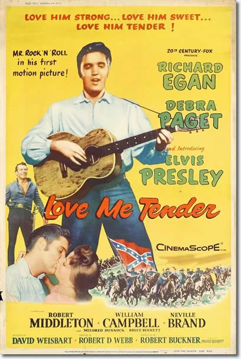
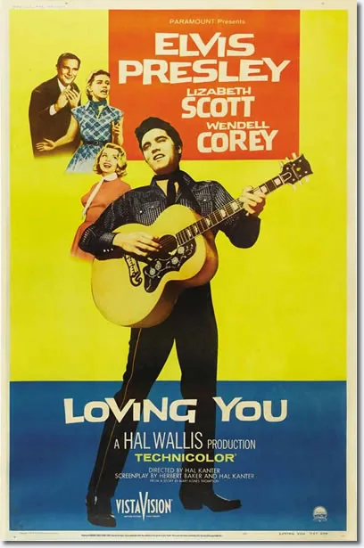
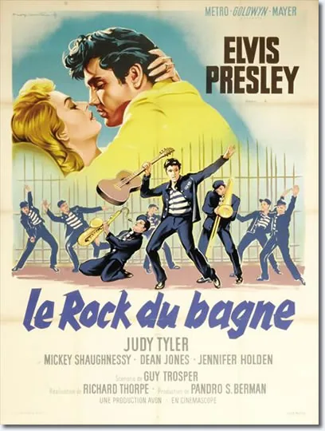
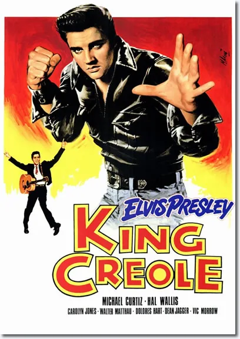
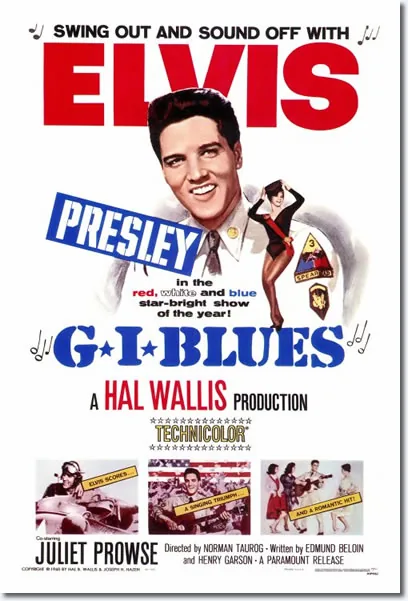
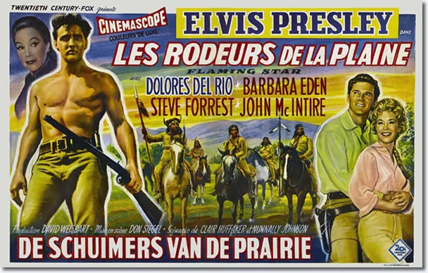
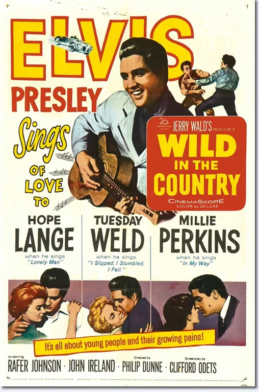
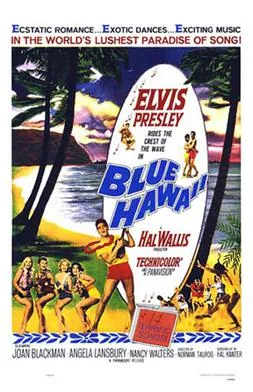
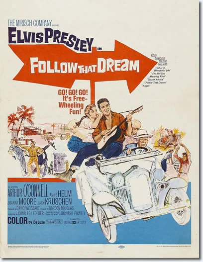
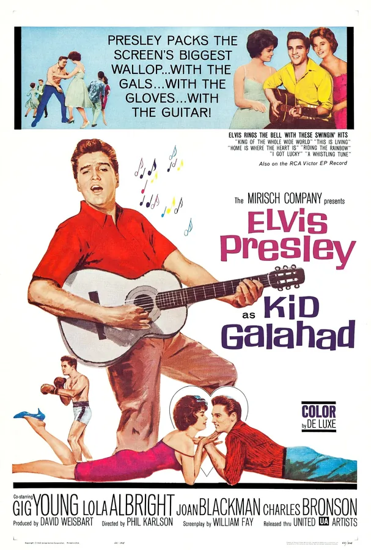
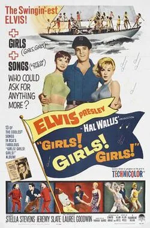
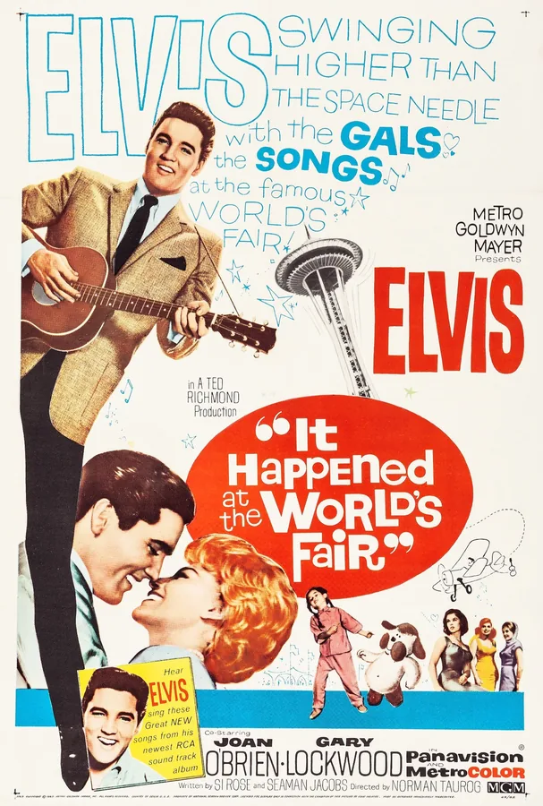
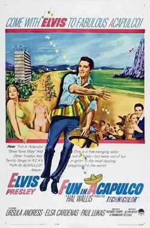
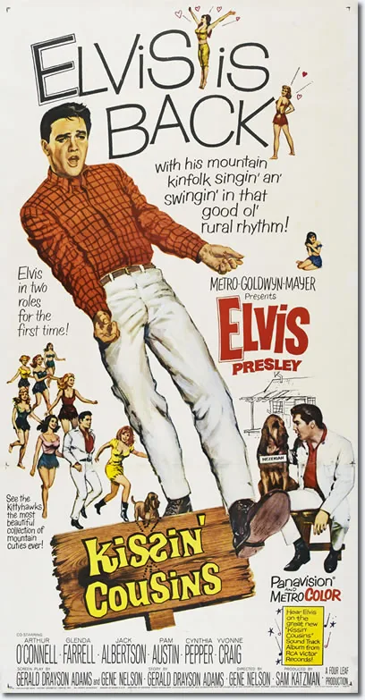
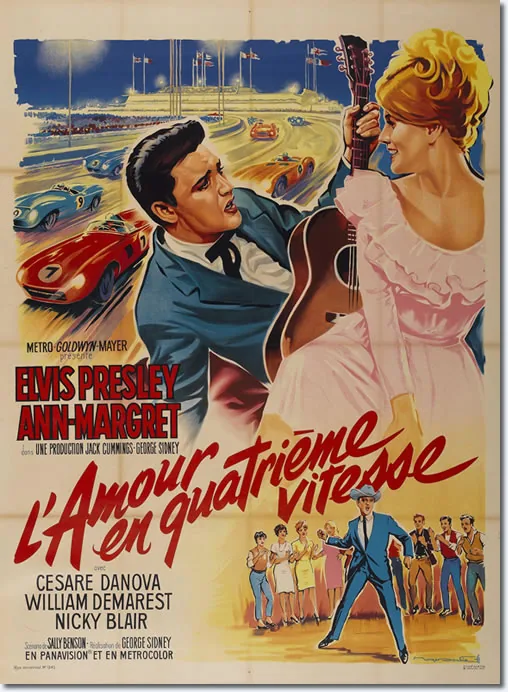
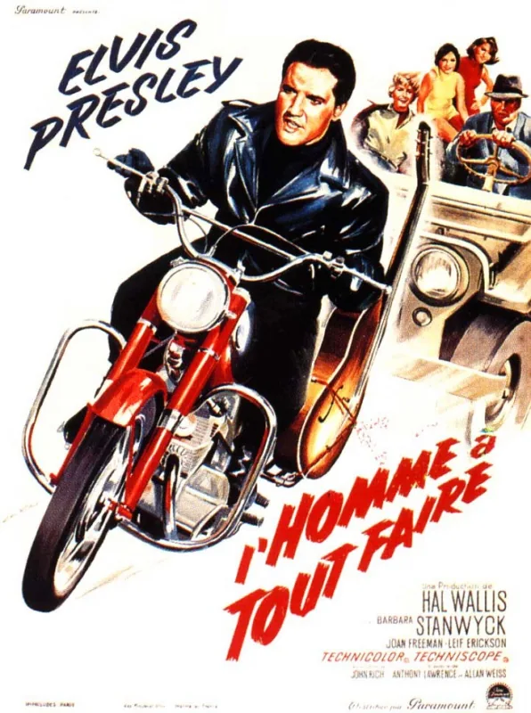
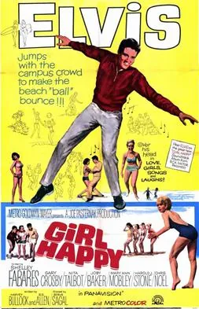
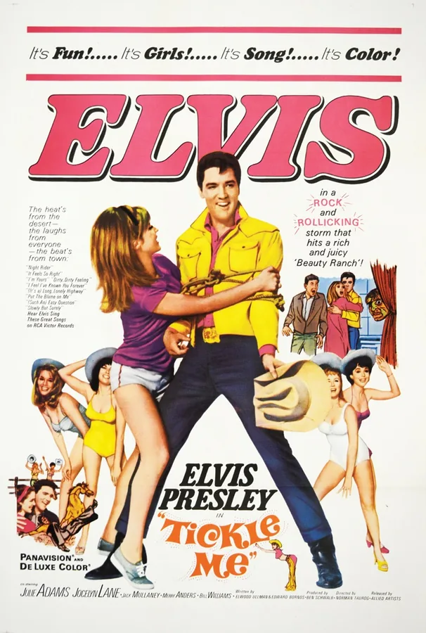
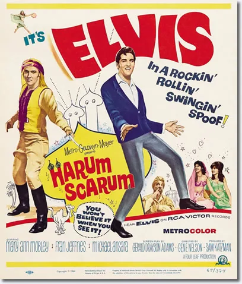
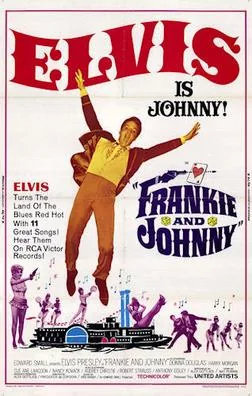
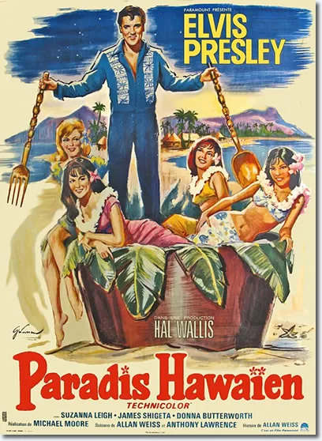
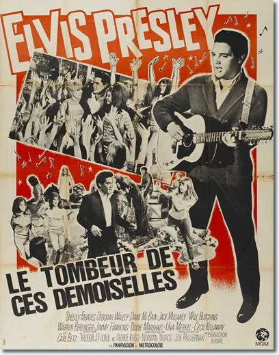
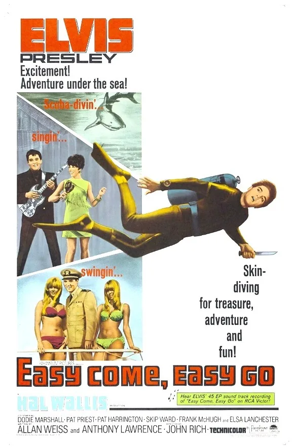
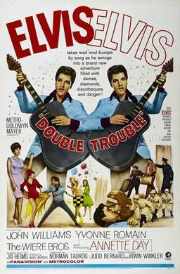
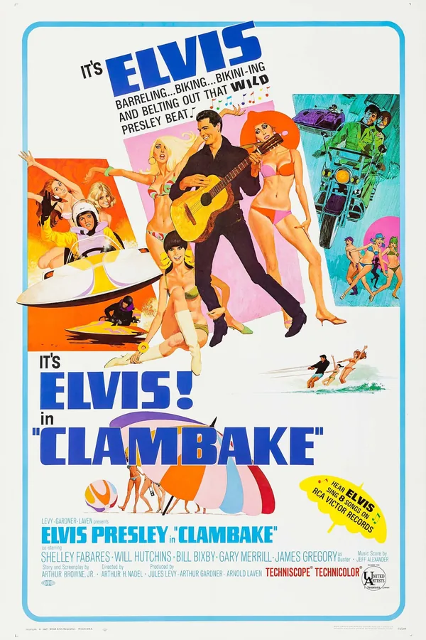
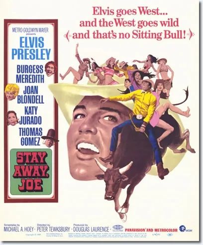
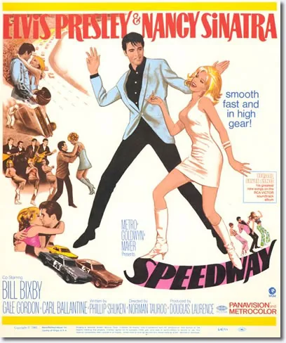
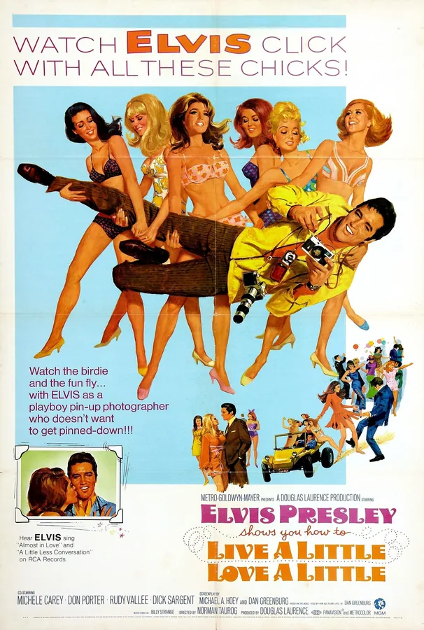
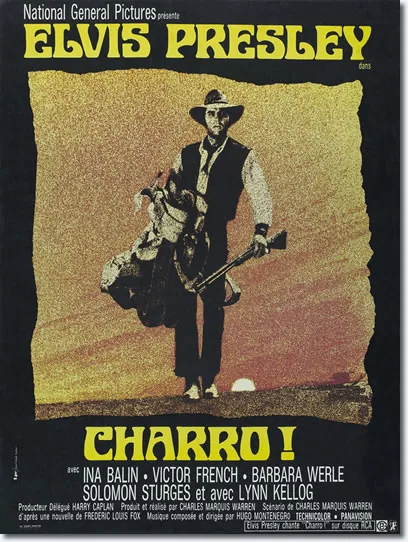
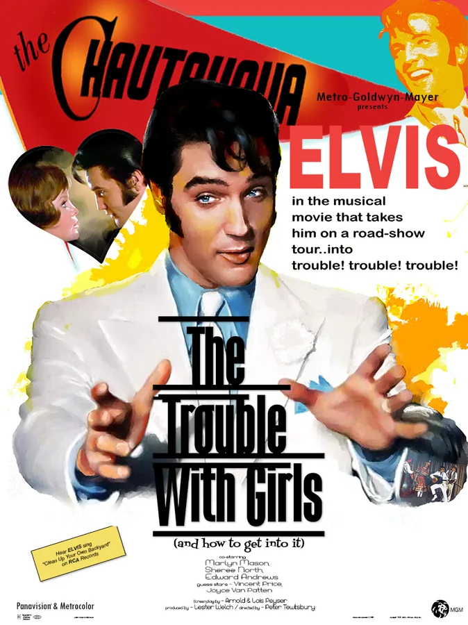
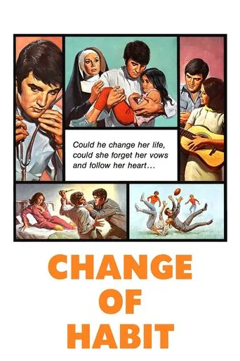
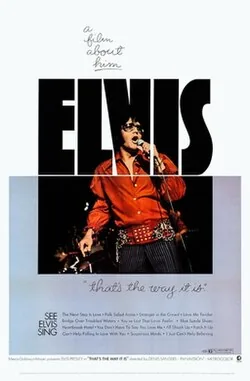
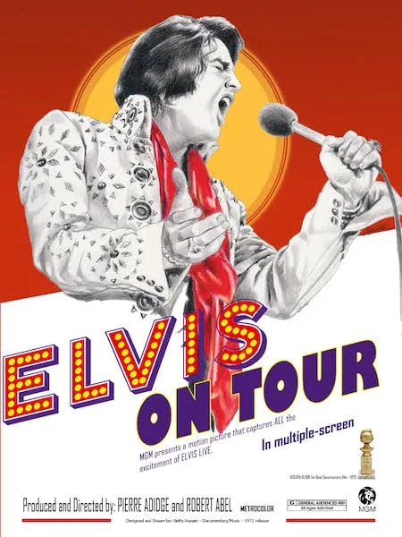
Au total : plus de 60 albums originaux entre 1956 et 1977, et plus de 700 titres enregistrés. Il n'a presque jamais écrit ses propres chansons.
24 pochettes, de 1956 à 1977 — l'essentiel de sa discographie RCA.
Principalement des albums studio et gospel, avec deux incontournables live (That's the Way It Is, From Memphis to Vegas).
La chambre d'Elvis est restée quasi intacte depuis 1977 — ses pantoufles sont encore sous le lit.
Un escalier secret mène directement vers la cuisine, avec un buzzer dissimulé sous la table.
Un coffre-fort secret existe dans la demeure, ainsi qu'un flipper truqué — Elvis gagnait toujours.
Couvert personnel systématique au restaurant, et cheveux teints au cirage.
Collection de plus de 30 armes, ceinture noire de karaté, et déguisement de policier.
Sandwich beurre de cacahuète, banane et bacon — parfois livré par jet privé jusqu'à Denver.
Tirait parfois sur les télévisions, avait un chimpanzé nommé Scatter.
A offert plus de 150 voitures à son entourage et à des inconnus au fil des années.
Les figures qui ont façonné sa carrière et sa vie personnelle.
La personne la plus importante dans la vie d'Elvis. Leur lien était fusionnel. Elle meurt en 1958, alors qu'Elvis est encore jeune et au tout début de sa carrière — un choc dont il ne se remettra jamais vraiment.
Ancien forain né aux Pays-Bas sous le nom d'Andreas van Kuijk, il a orchestré toute la carrière commerciale d'Elvis — contrats, tournées, films — souvent au prix de choix artistiques contestés.
Rencontrée en Allemagne alors qu'il était militaire, elle l'épouse en 1967. Leur fille Lisa Marie naît l'année suivante. Le couple divorce en 1973, tout en restant proches.
Seule enfant d'Elvis et Priscilla, elle hérite de Graceland à la mort de son père et deviendra elle-même chanteuse.
Présent dès la toute première session chez Sun Records, son jeu de guitare a défini le son des débuts rockabilly d'Elvis.
Avec Scotty Moore, il forme le premier groupe d'Elvis et participe à l'enregistrement de « That's All Right (Mama) ».
Quatuor vocal gospel, ils accompagnent Elvis sur scène et en studio pendant plus d'une décennie, apportant leur son harmonique caractéristique.
Père d'Elvis, il gère les affaires de son fils dans les dernières années et reste à Graceland après sa mort, jusqu'à la sienne deux ans plus tard.
Surnommée « Dodger », elle vit à Graceland auprès d'Elvis pendant de nombreuses années et reste une figure familiale proche jusqu'à sa mort en 1980.
Camarade de lycée à Humes High, il devient un membre clé de la « Memphis Mafia », l'entourage rapproché qui accompagne Elvis pendant des décennies.
Il n'a presque jamais écrit ses propres chansons — un mythe persistant veut pourtant le contraire.
Il n'a presque jamais joué en dehors de l'Amérique du Nord, malgré sa renommée mondiale.
L'album « Having Fun with Elvis on Stage » ne contient en réalité aucune chanson.
Le Colonel Parker, son manager mythique, était en réalité néerlandais — né Andreas van Kuijk.
Mes critiques et articles personnels sur Elvis.
Chargement...
Récompenses et hommages, de son vivant comme après sa mort.
3 Grammy Awards remportés de son vivant, tous les trois pour des enregistrements gospel.
Grammy Lifetime Achievement Award, décerné en 1971.
Une étoile sur le Hollywood Walk of Fame, au titre de sa carrière au cinéma.
Intronisé au Rock and Roll Hall of Fame dès sa création en 1986.
Intronisé au Country Music Hall of Fame en 1998.
Intronisé au Gospel Music Hall of Fame, en reconnaissance de ses albums religieux.
Le classement essentiel pour découvrir — ou redécouvrir — sa discographie.
10 questions pour vérifier si tu mérites vraiment ce titre.
Une relation fusionnelle avec Gladys. Une solitude intérieure. Le choix du service militaire. Une générosité impulsive. Graceland, encore imprégné de sa présence.
— Ce qui touche les fans, encore aujourd'hui